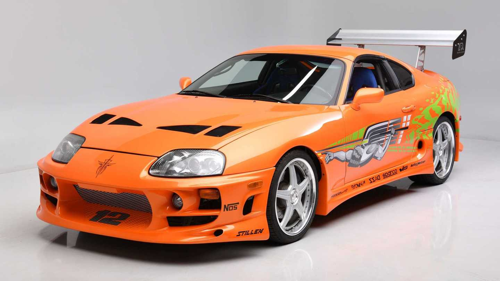

Velozes e furiosos é um filme que marcou muito a minha infancia foi após ele que eu começei a gostar bastante de carros esportivos e tals, sou muito fã dos personagem.
E uma coisa que me abalou muito quando eu descobri que o ator Paul Walker que fazia o personagem Brian O'conner morreu de acidente de carro, por mais que ele talvez morreu feliz por que morreu fazendo o que gosta, mas mesmo assim bateu uma tristeza muito grande quande eu descobri, e ainda mais com a homenagem que eles fizeram para ele no velozes e furiosos 6 com uma musica muito famosa que foi a See You Again – Wiz Khalifa uma musica com mais de 200 milhoes de visualizações
Velozes e Furiosos foi escrito a seis mãos (Gary Scott Thompson, Erik Bergquist e David Ayer) e é no mínimo curioso observar que tenha sido necessário tantos roteiristas para escrever um script tão simples. Dom Toretto (Diesel) é o líder de uma gangue antenada em carros tunados e muita velocidade. Quando um "forasteiro" chamado Brian (Walker) se aproxima da gangue, interessado na irmã de Toretto, a bela Mia (Jordana Brewster), logo é despachado pelo violento Jesse (Chad Lindberg).
Eis que surge uma corrida de rua na qual Brian consegue salvar a pele de Dom, com este ficando em dívida com o rapaz. Com isso, o novato é aceito no grupo e começa a conhecer aqueles sujeitos mais de perto. Mal eles sabem, no entanto, que Brian é, na verdade, um policial infiltrado tentando encontrar provas de que o grupo de Toretto é o responsável por assaltos incrivelmente elaborados e em alta velocidade.
Para os fãs de carros tunados, Velozes e Furiosos é um oásis. Com cores berrantes, motores espalhafatosos e NOS (óxido nitroso) suficiente para mandar alguns veículos para o espaço, o filme de Rob Cohen vem para aplacar a sede dos admiradores da cultura do tuning, na qual você altera as funções e especificações do carro para que ele seja completamente personalizado.
Uma pena que os efeitos especiais que mostram os veículos em toda a velocidade envelheceram mal e algumas tomadas chegam a ser vergonhosas pelo excesso de efeito computadorizado.
Muito constrangedor, mas não tanto quanto os diálogos. Nada pior do que observar os personagens vomitando todo o plot do filme em conversas expositivas. Para que a trama de Velozes e Furiosos funcione, é necessário que Brian caia nas graças de Dom, que virem amigos. Para tanto, os roteiristas criam situações em que Dom se abra com um estranho em pouquíssimo tempo, falando de seu pai, de sua família e de assuntos que, um sujeito durão como Toretto, provavelmente não compartilharia fora de uma mesa de bar, cercado por parceiros de longa data. No entanto, é exatamente isso que acontece com o bromance entre Dom e Brian.

Alguns dos carros que eu mais gosto nos filmes é o supra mk4 do Brian do filme "Velozes e Furiosos", que é o o segundo melhor filme na minha opinião o primeiro é o filme "Velozes e Furosos 5"
Carllos Danyel Alves Fagundes ©